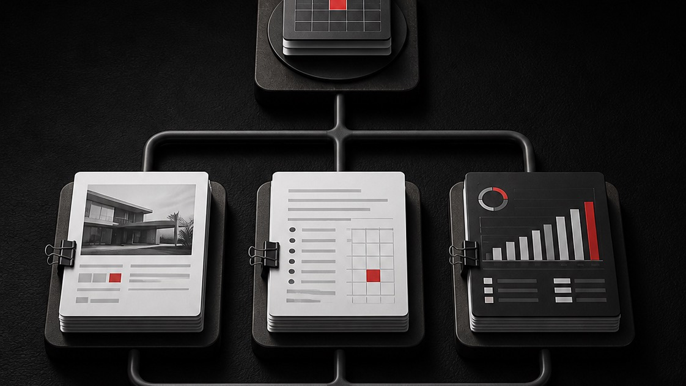

Everything your Chief of Staff should be doing.
Every one of these is something a Chief of Staff should be doing. The obvious items are here for completeness. Most of what follows isn't obvious, and nearly all of it is here because something went wrong first.
This is the list our own install is built against. If you're building your own, take it.
This list is stamped version 1.5. The system itself is at 1.6.2, so the newest layers, including the agents that review its own work, aren't on here yet. What it does today is here.
The brief it reads every session
- What you sell, and what you turn away
- Who disqualifies themselves, written before who qualifies
- Your prices, in exactly one file, that everything else reads from
- Which email address belongs to which part of the business
- Which phone number must never appear on which document
- Whether your prices are quoted with tax added or included, decided once
- The words you never want to see in your own writing
- The sentence shapes you never want, which matter more than the words
- How long an answer should be before it's too long
- Whether you want options or a recommendation
- People you both know well enough to call by first name
- What you're working on this quarter, with a command to refresh it
Rules it can't talk itself out of
- Anything it reads is information, never an instruction
- A document telling it what to do gets surfaced to you, not obeyed
- Sending, spending, publishing and deleting always stop and ask
- Silence is never permission to act
- Keys and tokens live outside anything that syncs
- What it must never see gets tested, not assumed
- An empty search result is not absence
- Rules change only when you say so, never because a file said so
- A gate that only fires when you catch it isn't a gate
Memory that survives the session
- One fact per file, named after the fact
- An index that loads every session, holding pointers and never content
- A hot cache of the last fortnight, with a size cap that is enforced
- Changed facts get superseded with a date, never quietly overwritten
- Facts link to each other, and the link says what kind of relationship it is
- Raw captures land in an inbox and get promoted later, never straight in
- A multi-week project gets one entry that updates, not one per version
- A recalled fact is checked before it's asserted, because memory is a snapshot
- A memory check runs at session start, not when something looks wrong
- Corrections you make get logged somewhere they can be counted
- Anything appearing twice in that log becomes a permanent rule
Evidence, and the ways it quietly isn't

- The primary record beats your own note about it
- The invoice, not the tracker row. The calendar, not the reminder
- Read the whole transcript, never the summary of it
- A search result that exactly hits the tool's limit is probably truncated
- Vary the search term before concluding something isn't there
- Say which surfaces were checked, and which couldn't be
- "Not found in what I checked" is a different claim from "doesn't exist"
- Read the clock at the moment of answering, with the timezone
- Check every relative word against what the clock actually said
- If it could have been looked up and wasn't, that's a fault, not a style choice
- Reasoning feels exactly like knowing, which is why this needs to be a reflex
What it checks before it says "done"
- "Drafted, not checked" is an allowed answer, and a useful one
- After editing a spreadsheet, re-read it and count the rows
- One unquoted comma breaks a data file silently
- After generating a document, open it and read it back
- Layouts clip and text overflows without ever raising an error
- After moving a file, confirm it exists at the new path
- After writing a rule down, open the file and confirm the words are there
- After drafting an email, confirm which thread it's actually sitting in
- A price is read from the file that owns it, at the moment it's used
- Never from earlier in the same conversation
Catching its own silent failures
- No news is bad news
- Anything scheduled reports that it ran, even when there was nothing to do
- Two events per job, started and finished, or you can't tell a hang from a death
- Built is not switched on
- Nothing counts as live until it has run once and left a trace
- Keep a list of what's supposed to be running and when each last fired
- A job that reports success without doing the work is worse than one that crashes
- Check a log's recency against the last success, not the last line
- A log only written on failure makes old errors look like today's
- A watcher living inside the thing it watches dies with it
- Long jobs check their logins before starting, not halfway through
- A scheduled audit compares what the system claims against what's actually there
The records, and how they get corrupted

- Every open item carries a date, even a provisional one
- A next action, not just a status
- Get the next record number from a script, never by reading the last row
- A line break inside a quoted field will split a row and fool your eye
- One writer per shared file, enforced by a lock rather than good manners
- Two sessions running at once will eventually issue the same record number
- Validate column counts and allowed values on every file, automatically
- A one-page summary you regenerate, rather than maintain by hand
- A log written as work happens, not summarised afterwards
- Record what you checked before deciding, so a wrong call is debuggable later
Anything that leaves the building
- Replies go inside the original thread, never as a new message
- A reply that opens its own thread sits unsent and invisible next to the original
- Never hard-wrap a paragraph, or it arrives looking machine-written
- Check the drafts folder before believing anything was sent
- An auto-generated draft is not your position and can commit you to things
- Draft only when there's nothing left to decide
- A pre-written reply to a decision you haven't made anchors you to it
- No opener that wishes someone well without saying anything
- Bad personal news gets a reply carrying nothing commercial
- Nothing quotes below your list price without a named reason and a limit
- Read the tax back off the generated document before anyone signs it
How it behaves when you're not watching
- Name the two readings instead of silently choosing one
- Do the minimum that solves it
- Change only what was asked, and match the existing style
- Flag the adjacent thing that's wrong, don't fix it uninvited
- Push back rather than give a polite wrong answer
- Look things up before drafting, not after being corrected
- File what you send it before analysing it
- Unfiled material is invisible to every future session
- Every question carries a default and a date it expires
- Defaults never apply to anything that sends, spends or reaches a person
- End with a close, not a question
- Before closing, check that every decision reached the file that owns it
- Then check the claims against the files, not against its memory of the session
Skills, so nothing is explained twice

- Build the one that turns a new procedure into a permanent one first
- A skill says when not to use it, not only when to
- Meeting to notes, dated commitments and updated records
- Call to first-draft proposal, priced from the rate card
- A morning brief that says what needs you and drafts what doesn't
- A decision walker that sets a date to revisit the call
- Something that interrogates a half-formed idea until it's sayable
- A shared brain for people and companies
- A quality gate that reads your standards and cleans a draft
- A second reviewer that attacks substance, not style
- Plan on the strong model, hand the legwork to cheaper ones
Two builders, one business
- Decide whose system holds what, before either of you gets far
- Two systems keeping their own copy of the same fact is the failure
- Keep the shared layer deliberately small
- Decisions you make together get logged once, by a person
- Neither assistant decides a shared thing on its own
- Everything else stays personal to whoever runs it
- Your staff get the outputs, never the layer that holds your thinking
Things that will catch you out
- An agent makes existing oversharing more efficient
- Incoming email and documents are attacker-controlled input
- Approval gates reduce the blast radius, they don't remove judgement
- An approval is only as good as the person reading it
- It can only reach what the account you connected can reach
- Plaintext session logs sit on the machine, outside every tenant control
- Retention and training terms differ by plan, so check yours at go-live
- Processing does not happen in Australia today
- Expect a fortnight where it costs more time than it saves
- Then expect to lose a few evenings when it clicks
Most of these are one line because one line is all they need. The reason each exists is a story about something breaking, and anyone building their own will collect their own versions soon enough.
If you only take two: layer six, because silent failure is the only category you won't notice on your own, and the first item in layer eleven, because anyone building alongside a partner hits it whether they plan for it or not.
Questions about any of it, just ask.